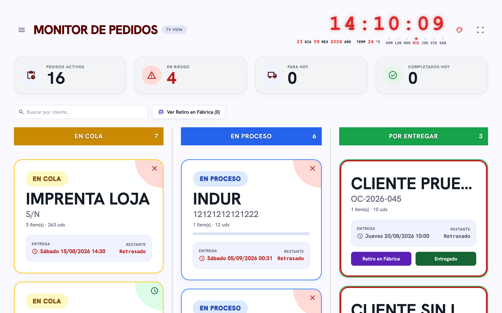
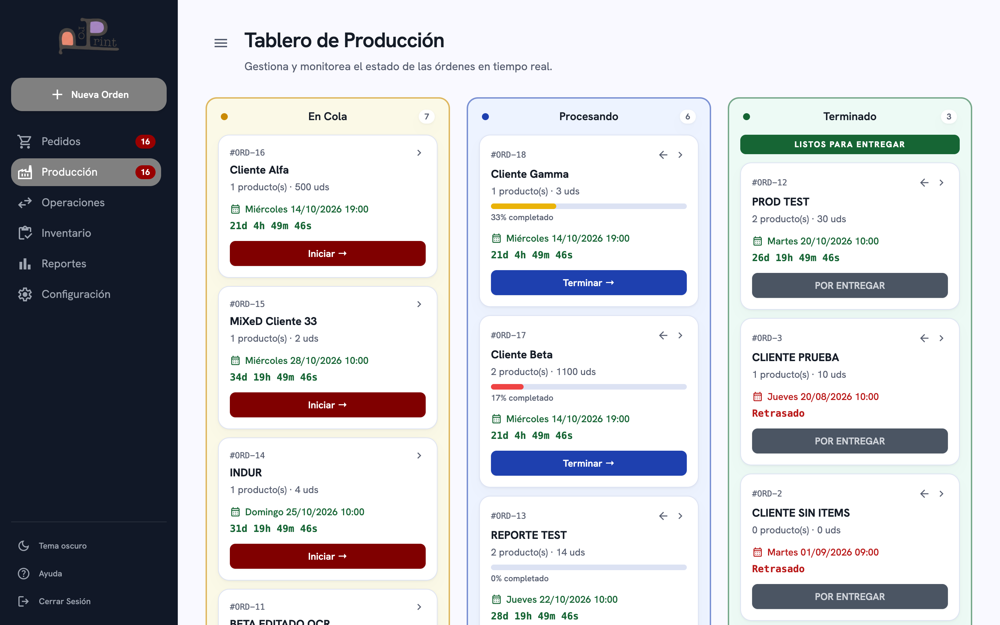
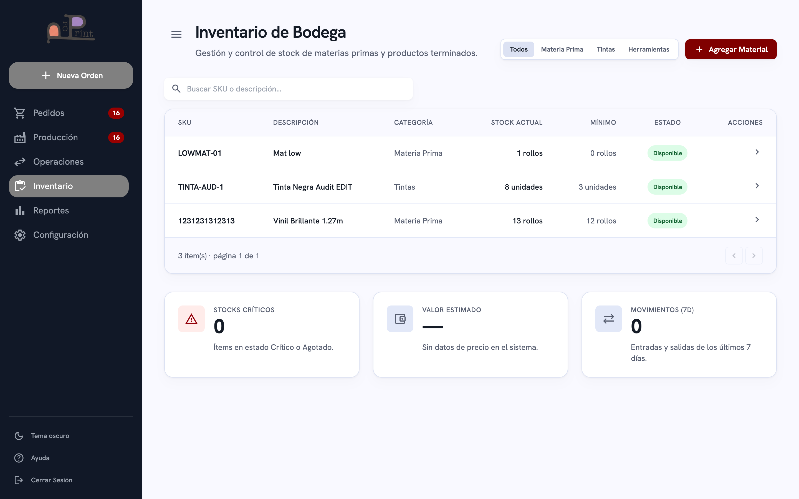
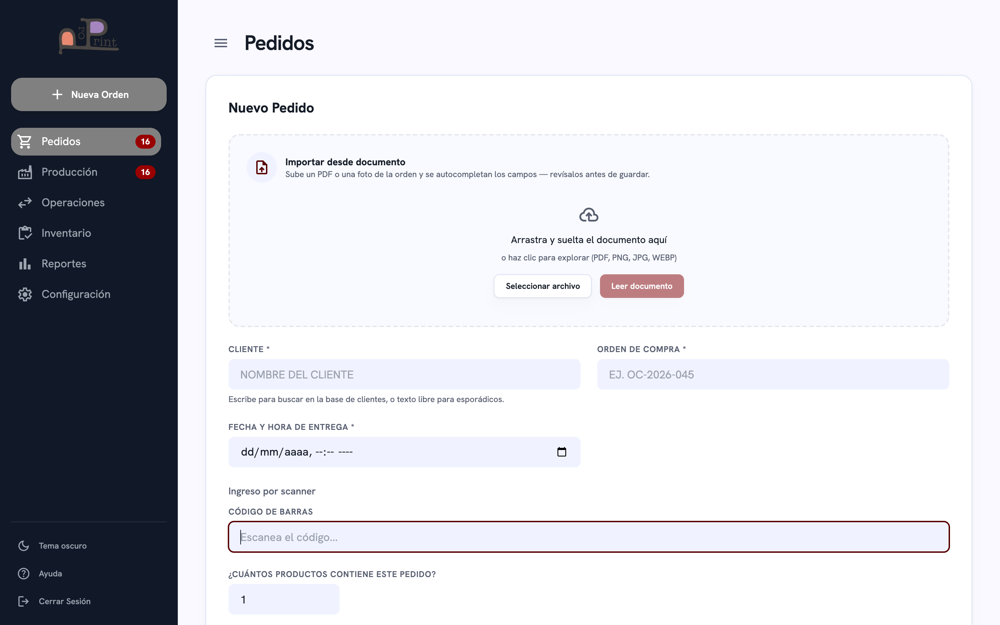
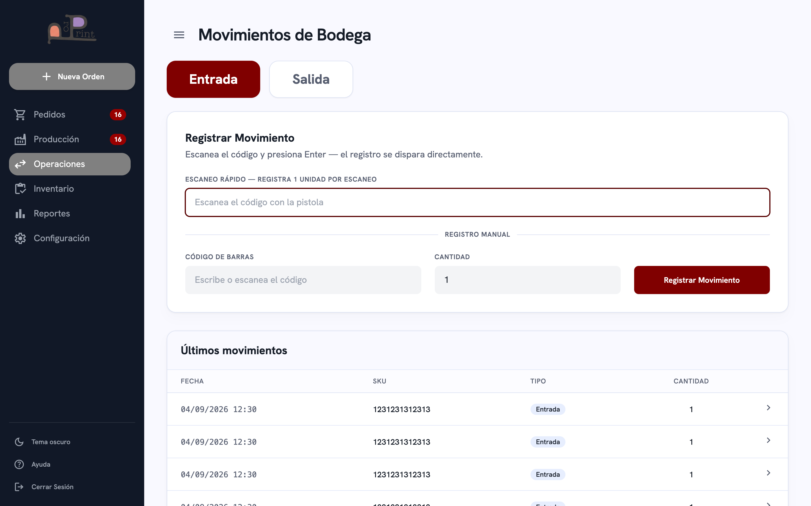
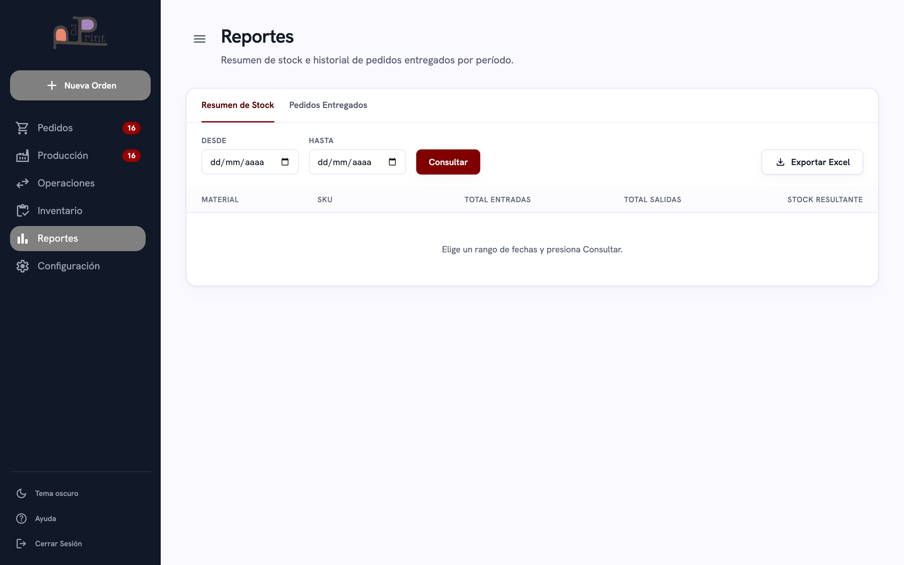

✓
Proyecto completado y en producción
Las 6 fases y las 25 semanas del plan fueron entregadas. El sistema corre en el servidor interno de la planta (Ubuntu, 192.168.0.10) y se usa a diario en los computadores de ProPrint. Documento generado el 23 de septiembre de 2026.
Fase 1 — Infraestructura y base del sistema
Semanas 1–5 · Mes 1
Infraestructura
✓ Completada
1
Semana
Entorno de desarrollo y servidor de planta
Servidor Ubuntu on-site con IP fija (192.168.0.10) y acceso SSH · Python 3.14 + entorno virtual + Flask + Gunicorn · Render configurado como respaldo con build automático · Angular dev server (:4200) con proxy hacia Flask (:5001) · repositorio Git activo (scp-angular-flask).
2
Semana
Modelo de datos SQLite con SQLAlchemy
Diseño de 8 modelos: Usuario, Material, Movimiento, Pedido, PedidoItem, EntregaParcialItem, ProductoCatalogo y Cliente · Base SQLite (sgp.db) · migraciones automáticas (_migrar_*) y db.create_all() al arranque, sin perder filas · creación automática del usuario administrador inicial.
3
Semana
Autenticación, sesiones y roles
Flask-Login con cookie de sesión HttpOnly + SameSite=Lax y duración de 10 h · contraseñas con hash de Werkzeug · roles admin / jefe / operador · @login_required en las rutas y refuerzo de permisos en el backend · en el frontend, interceptor que redirige el 401 a /app/login y guard de ruta.
4
Semana
Arquitectura frontend Angular 21 + Tailwind
Angular 21 con componentes standalone y Tailwind CSS v3 (tokens propios) · sidebar fijo en escritorio y navegación inferior en móvil · componentes reutilizables (tablas, badges, cards) · servicios centrales: ApiService, Session y un ContadoresService singleton para los badges.
5
Semana
Servido unificado + primer despliegue en la empresa
Un solo proceso Flask sirve el dist de Angular en /app/* y el API REST en /api/* · compilación con ng build --base-href /app/ · primer deploy real al servidor Ubuntu de la planta y respaldo en Render · prueba con el cliente desde sus propios computadores.
Fase 2 — Bodega e inventario
Semanas 6–10 · Mes 2
Inventario
✓ Completada
6
Semana
Registro de materiales por categoría real
CRUD de materiales con formulario que cambia según la categoría de Proprint: Materia Prima, Tintas y Herramientas · Tipo (Sustrato / Tinta / Cinta) y ancho visible solo para Sustrato · unidad de medida propia (rollos / ml / unidades) · clasificación automática (Materia Prima / Insumo) · SKU en mayúsculas; un SKU existente suma stock en vez de duplicar.
7
Semana
Operaciones — entradas por scanner USB
Módulo de scanner del día a día · flujo rápido: escanear el código + Enter registra 1 rollo directamente (sin pulsar botón) · cantidad vuelve a 1 tras cada registro y modo manual para cargar lotes grandes · foco automático al siguiente escaneo · bloqueo del campo mientras la petición está en curso para evitar lecturas concatenadas.
8
Semana
Salidas, validación de stock e historial permanente
Salida por scanner con validación de stock (si no alcanza, el mensaje muestra el disponible en la unidad real del material) · cada escaneo genera un movimiento independiente · historial permanente e inmutable de los últimos 50 movimientos, con fecha en hora de Ecuador (UTC-5), usuario y observación.
9
Semana
Estados de stock y alertas automáticas
Estados con color: Disponible (verde), Bajo (amarillo), Crítico (naranja) y Agotado (rojo parpadeante) · umbral configurable por material (stock mínimo = stock crítico) · badge rojo en el sidebar con la suma de materiales Críticos + Agotados, actualizado en cada navegación.
10
Semana
Importación y exportación en Excel
Carga masiva del inventario desde Excel (asigna unidad de medida y clasificación según la categoría de cada material) · exportación del inventario a Excel · cierre del módulo de bodega con datos reales de la planta cargados.
Fase 3 — Clientes, catálogo y pedidos
Semanas 11–15 · Mes 3
Pedidos
✓ Completada
11
Semana
Directorio de clientes recurrentes
CRUD de clientes: código único, nombre, RUC, direcciones de facturación y entrega, contacto, horarios y plazos de entrega · logo del cliente (PNG, máx. 200×200 px y 200 KB, validado en el backend) que luego aparece en el Monitor TV · buscador parcial reutilizado en Pedidos y en el Catálogo.
12
Semana
Catálogo de productos con fórmula de producción
Catálogo con código único por cliente y sus datos técnicos: etiquetas por plancha, planchas, rollos, etiquetas por rollo, largos y ancho · vínculo Material Usado hacia el inventario · las etiquetas por rollo + el material vinculado son las que activan el descuento automático de stock · imagen de referencia para códigos especiales.
13
Semana
Creación y seguimiento de pedidos
Alta de pedidos con cliente (del directorio o texto libre para esporádicos) y fecha/hora de entrega · ítems de trabajo con código del catálogo (filtrado por el cliente elegido), código manual o S/C, descripción y cantidad · resumen de revisión antes de confirmar y guardar.
14
Semana
Lectura de documentos (PDF y OCR de imagen)
Al crear un pedido se puede subir una orden en PDF, PNG, JPG o WEBP · el backend extrae el texto con pdfplumber (PDF) o con OCR pytesseract (imagen) y, por reglas, detecta cliente, orden de compra, fecha e ítems · el formulario se prellena y resalta los campos hallados en amarillo para verificar · el guardado sigue siendo manual.
15
Semana
Ciclo de vida y descuento automático de stock
Estados del pedido: En Cola → Procesando → Terminado → (Retiro en Fábrica) → Entregado · al marcar Entregado, el sistema descuenta el inventario con la fórmula ceil(etiquetas ÷ etiquetas por rollo) y genera el movimiento de Salida · la edición retroactiva (solo Jefe) revierte y reaplica el descuento · los Entregados se archivan fuera de la lista principal.
Fase 4 — Producción y monitor en planta
Semanas 16–20 · Mes 4–5
Producción
✓ Completada
16
Semana
Tablero Kanban de producción
Kanban en tiempo real con tres columnas: En Cola (amarillo), Procesando (azul) y Terminado (verde) · botones para mover cada tarjeta (Iniciar → · Terminar ✓ · Entregado ✓), reservados a Admin y Jefe · los pedidos Entregados salen del tablero · cada tarjeta muestra cliente, cantidad de productos y unidades totales.
17
Semana
Semáforo de fechas y countdown en vivo
Cada tarjeta muestra la fecha de entrega con semáforo: verde a más de 3 días, amarillo entre 1 y 3 días, rojo a menos de 1 día o "Retrasado" si ya pasó · countdown en vivo (días, horas, minutos y segundos) que avanza cada segundo · el parseo de la fecha se cachea para no rehacerse en cada tick.
18
Semana
Estados por ítem y entregas parciales
Cada ítem del pedido tiene su propio estado (pendiente / listo / suspendido / entregado parcial) · entregas parciales por cantidad respaldadas por el modelo EntregaParcialItem · barra de progreso del pedido · actualización optimista: el botón refleja "listo" en milisegundos y solo revierte si el servidor falla, sin congelar el resto del tablero.
19
Semana
Pedidos-Monitor — pantalla tipo TV 24/7
Pantalla pensada para un monitor de planta encendido todo el día (endpoint /api/pedidos/monitor-tv) · cuatro conteos por estado y tarjetas de los pedidos activos con semáforo, countdown, número de orden y logo del cliente · se refresca por sondeo cada 2 s, con un servicio de contadores centralizado que evita duplicar peticiones.
20
Semana
Integración del flujo completo y optimización
Prueba del flujo entero: Pedido → verificación → Kanban → Monitor → entrega (Retiro en Fábrica o Entregado) con descuento de stock correcto · optimizaciones de rendimiento: sondeo de badges centralizado en un único temporizador y caché de fechas del monitor para bajar el trabajo repetido en la pantalla siempre encendida.
Fase 5 — Reportes, exportación y responsive
Semanas 21–23 · Mes 6
Reportes
✓ Completada
21
Semana
Módulo de reportes con filtros
Reporte de stock: entradas y salidas agrupadas por material con filtro de fechas, cada fila en su unidad real · reporte de pedidos por rango de fechas, cliente (coincidencia parcial) y estado, con columnas de fecha prometida y fecha real de entrega · disponible para todos los usuarios con sesión.
22
Semana
Exportación a PDF, impresión y Excel
Botones Descargar PDF e Imprimir del reporte de pedidos, generados con ReportLab (un pedido por página, con su tabla de ítems y notas de parciales o suspendidos) · PDF individual por pedido para el visor del navegador · exportación del inventario a Excel · el encabezado del PDF repite el rango y los filtros aplicados.
23
Semana
Diseño responsive y endurecimiento
Layout responsive con un único punto de quiebre en 768 px: escritorio con sidebar y tablas, móvil con barra de pestañas inferior y tablas convertidas en tarjetas apiladas · endurecimiento posterior: permisos por rol reforzados en el backend, sondeo centralizado y actualizaciones optimistas en el Kanban.
Fase 6 — Instalación definitiva y capacitación
Semanas 24–25 · Mes 6
Entrega final
✓ Completada
24
Semana
Despliegue definitivo en la planta
Gunicorn corriendo como servicio permanente de systemd (sgp) en el servidor Ubuntu · IP fija 192.168.0.10 accesible en toda la red interna · flujo de actualización por rsync + ng build --base-href /app/ + systemctl restart sgp · SECRET_KEY por variable de entorno y Render como respaldo automático.
25
Semana
Capacitación, migración y entrega oficial
Capacitación a los perfiles Admin y Jefe sobre el panel completo, el scanner y el flujo de producción · carga real del catálogo, clientes e inventario y migración de los datos históricos desde el Excel de la planta · paso definitivo de Excel al sistema · entrega oficial: SGP en uso diario en los computadores de ProPrint.
El sistema en funcionamiento
Capturas reales · datos de la planta

Pedidos-Monitor — pantalla TV 24/7Conteos por estado, reloj, semáforo y countdown en vivo para el monitor de planta.

Producción — Tablero KanbanColumnas En Cola / Procesando / Terminado, con progreso, semáforo y countdown por pedido.

Inventario de BodegaStock por categoría con estados de color, umbrales y KPIs de bodega.

Pedidos — Nuevo pedidoAlta de pedidos con importación desde documento (PDF u OCR de imagen) e ítems por scanner.

Operaciones — ScannerEntradas y salidas por código de barras, escaneo rápido e historial de movimientos.

ReportesResumen de stock y pedidos por período, con exportación a Excel y PDF.
Módulos en producción
8 módulos activos
IN
Inventario
Materiales por categoría, estados de stock y alertas.
OP
Operaciones (scanner)
Entradas y salidas por código de barras USB.
PE
Pedidos
Alta con lectura de documentos y ciclo de vida.
PR
Producción (Kanban)
Tablero en tiempo real con semáforo y countdown.
TV
Pedidos-Monitor
Pantalla tipo TV para la planta, 24/7.
RE
Reportes
Stock y pedidos con export a PDF y Excel.
BD
Configuración
Catálogo de productos y directorio de clientes.
US
Usuarios y roles
Autenticación y permisos Admin / Jefe.
Descargar cronograma en PDF
Archivo: cronograma-sgp.pdf